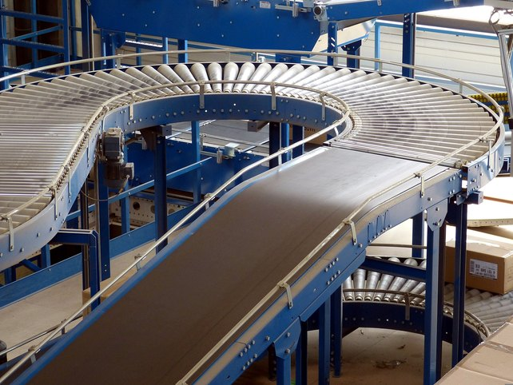
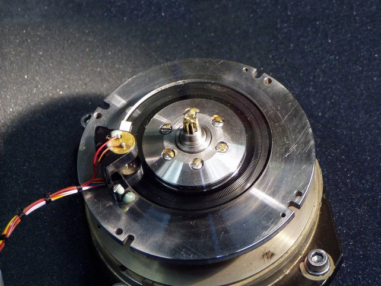
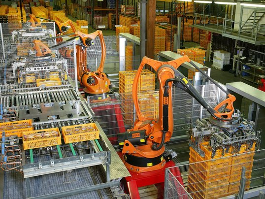
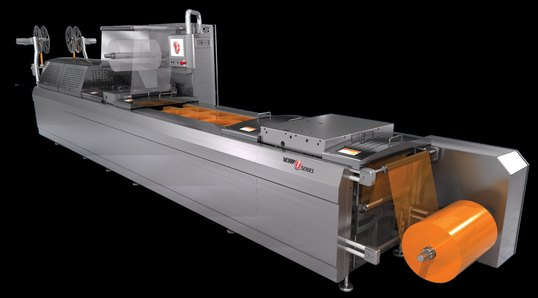
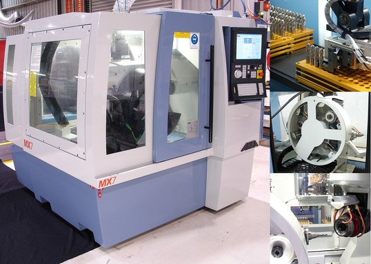
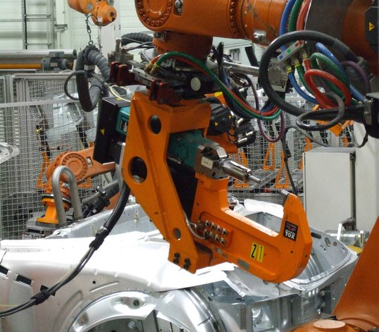
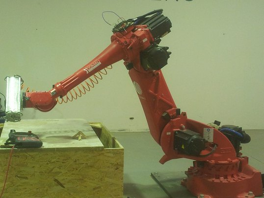
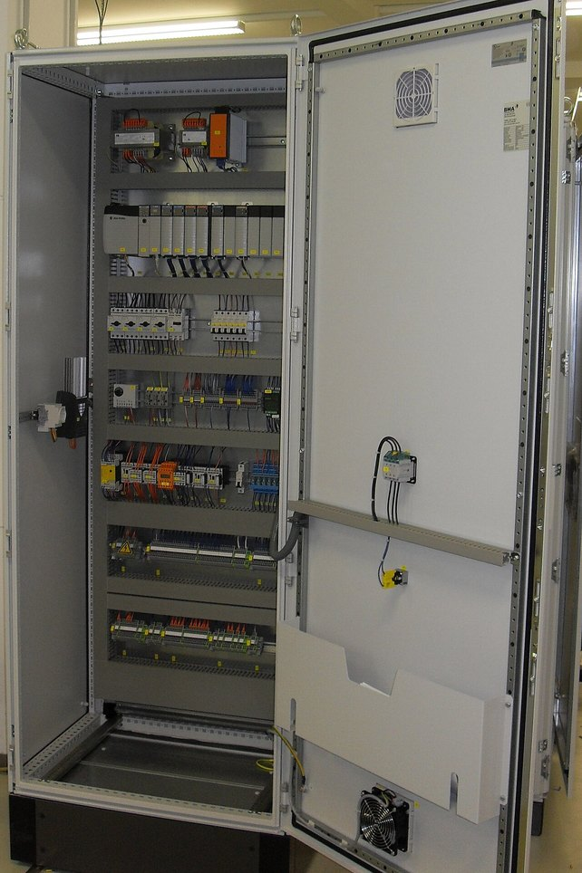

Servo drive monoeixo com EtherCAT, encoder absoluto de 23 bits e STO SIL3 — o que ele faz, quando ele é a escolha certa e como projetar em torno dele.
Para quem: engenheiros e técnicos de automação, projetistas de máquinas, integradores, programadores de CLP, manutenção e compradores técnicos que precisam decidir — não decorar catálogo.
Um inversor com motor de indução responde bem a uma pergunta: “quão rápido o eixo deve girar?”. O servo responde a outra, muito mais difícil: “onde exatamente o eixo deve estar, agora, e daqui a 2 ms?”
A diferença não é de qualidade — é de pergunta. O conjunto inversor + motor de indução aciona a carga em malha aberta: ele impõe uma frequência e confia que o motor vai acompanhar. Se a carga aumentar, o rotor escorrega, e ninguém no sistema sabe disso.
O conjunto servo drive + servomotor trabalha em malha fechada: um encoder no eixo informa a posição real milhares de vezes por segundo, o drive compara com a posição desejada e corrige a corrente — e portanto o torque — continuamente. O erro existe, mas é medido, limitado e conhecido. É isso que permite à máquina prometer repetibilidade, parada em cota e sincronismo entre eixos.

A pergunta útil não é “servo ou inversor?”, e sim: alguém precisa saber onde o eixo está? Se a resposta for não, o servo vira custo e complexidade sem retorno.
| Característica | Motor de indução + inversor | Servomotor + servo drive |
|---|---|---|
| Controle de velocidade | Excelente e economicamente imbatível em regime contínuo | Excelente, com faixa de controle muito mais larga |
| Posicionamento | Possível com encoder externo e CLP, mas limitado e trabalhoso | Função nativa: é para isso que o produto existe |
| Realimentação | Opcional; a maioria opera sem | Obrigatória — o encoder é parte do produto |
| Resposta dinâmica | Média; limitada pela inércia do rotor e pela malha lenta | Alta; rotor de baixa inércia e malha de corrente em kHz |
| Sincronismo entre eixos | Depende da arquitetura e degrada com a carga | Excelente com barramento determinístico |
| Custo e complexidade | Menores: parametrizar e partir | Maiores por eixo — compensam via produtividade e refugo |
Um inversor vetorial com encoder faz posicionamento simples e resolve muita indexação de baixa exigência. A divisa real não é “tem encoder ou não”, e sim rigidez de malha: quantas vezes por segundo o acionamento consegue medir o erro e reagir a ele. É aí que o servo se separa — e é isso que a página seguinte detalha.
O SV660N é um servo drive monoeixo da série SV660 da Inovance, com interface EtherCAT, projetado para trabalhar com os servomotores da série MS1. Ele não decide o movimento — quem decide é o controlador. O drive é o executor: recebe uma referência a cada ciclo de rede e é responsável por fazer o eixo real coincidir com ela.
A referência desce da esquerda para a direita; a verdade sobe pela realimentação. Sem o caminho de baixo, o conjunto é apenas um acionamento — não um servo.
O controle é organizado em cascata. A malha externa é lenta e decide o “onde”; a interna é rápida e decide o “com quanta força”. Cada uma só consegue ser tão boa quanto a malha que está dentro dela — por isso a malha de corrente é a fundação de todo o desempenho.
| Malha | Ciclo | Do que ela cuida |
|---|---|---|
| Posição | 62,5 µs | Erro entre a cota comandada e a cota lida no encoder |
| Velocidade | 62,5 µs | Perfil de rampa; banda de até 3 kHz |
| Corrente | 1,6 µs | Torque instantâneo; banda de 4,5 kHz |
Frequência de chaveamento (portadora): 12 kHz. Valores oficiais Inovance.
Banda de malha alta significa tempo de acomodação curto: o eixo chega à cota e para de oscilar mais cedo. Numa máquina de ciclo rápido, 10 ms economizados por movimento em um ciclo de 1 s equivalem a cerca de 1 % de produtividade — repetido em cada peça, todo dia.
Se o eixo faz um movimento longo e suave a cada 30 s, a banda da malha é irrelevante: o ciclo é dominado pelo tempo de percurso. Especificação alta só vira benefício quando o gargalo está onde ela atua.
A diferença instantânea entre onde o eixo deveria estar e onde ele está. O drive nunca o zera — ele o mantém pequeno e previsível. Em CSP, cresce com a velocidade e cai a zero na parada.
A inércia da carga vista pelo eixo do motor, após redutor e transmissão. É o que mais influencia a estabilidade: relação alta demais exige ganho baixo, e ganho baixo derruba a dinâmica.
O contínuo sustenta o regime; o de pico existe para acelerar. Ciclos curtos são dimensionados pelo pico e verificados pelo RMS térmico — nunca só pela potência em kW.
O SV660N implementa o perfil CiA 402 sobre CoE. A escolha do modo define quem gera o perfil de movimento — o controlador ou o drive — e é uma decisão de arquitetura, não de conveniência.
| Modo | O que o master envia | Quando faz sentido |
|---|---|---|
| CSP | Posição alvo a cada ciclo | Padrão para interpolação e sincronismo multieixo — o controlador domina a trajetória |
| CSV | Velocidade alvo a cada ciclo | Quando o controlador fecha a própria malha de posição com lei de controle proprietária |
| CST | Torque alvo a cada ciclo | Controle de tensão de material, prensagem e ensaio de carga |
| PP | Cota-destino e parâmetros do perfil | Movimento ponto a ponto: o drive gera a rampa e alivia a carga cíclica da rede |
| PV / PT | Velocidade ou torque com rampa no drive | Eixos auxiliares que não precisam de coordenação fina |
| HM | Método de referenciamento | Homing padronizado — dispensável em eixo com encoder absoluto multi-turn |
Toda especificação abaixo vem da documentação oficial. A coluna da direita é a parte que catálogo nenhum entrega: o que aquele número muda na sua máquina.
| Item | Especificação oficial | O que isso significa para o projeto |
|---|---|---|
| Faixa de potência | 50 W a 7,5 kW | Cobre desde eixo auxiliar de dosagem até eixo principal de máquina média. Acima disso, outra família. |
| Alimentação | Mono 200–240 V; tri 220 V; tri 380–440 V (±10 %, 50/60 Hz) | Modelos S7R6 e S012 aceitam monofásico 220 V sem derating — útil em máquina compacta sem trifásico disponível. |
| Corrente contínua / máx. | 1,6 / 5,8 A até 25,7 / 64,2 A conforme o modelo | A relação pico/contínua fica entre ≈2,5× e ≈3,6× dependendo da carcaça. É essa margem que paga a aceleração — verifique-a, não só os kW. |
| Malha de corrente | Banda 4,5 kHz · ciclo 1,6 µs | Fundação do desempenho. Permite torque limpo em alta rotação e acomodação curta. |
| Malha de velocidade | Banda até 3 kHz · ciclo 62,5 µs | Rejeita perturbação de carga rapidamente — relevante em corte, prensagem e desbobinamento. |
| Realimentação | Encoder absoluto serial 23 bits, single ou multi-turn | 8.388.608 contagens por volta. Multi-turn dispensa referenciamento a cada energização. |
| Faixa de controle de velocidade | 1:6000 | O mesmo motor atende avanço lento de ajuste e regime de produção sem trocar transmissão. |
| Precisão de torque | ±2 % (repetibilidade) | Viabiliza controle de tensão de material e aperto controlado — dentro dessa tolerância. |
| Tempo de posicionamento | 1 ms a 10 ms | Define o piso do tempo morto entre movimentos encadeados. |
| Comunicação | EtherCAT · CoE (PDO/SDO) · Distributed Clock | Integra a arquiteturas multieixo determinísticas. Sete modos CiA 402 — ver p. 3 e p. 5. |
| E/S locais | 5 DI e 3 DO realocáveis (50 mA, 5–30 V) | Fim de curso, home switch e dois touch probes ficam no drive — capturas de posição não dependem da varredura do CLP. |
| Supressão de vibração | 4 notch filters (2 adaptativos), 50–5000 Hz | Permite subir ganho em estrutura com ressonância sem cair em oscilação audível. |
| Segurança | STO SIL3 (EN/IEC 61800-5-2), dois canais | Parada segura sem contator de potência no circuito do motor. Ver p. 5. |
| Frenagem | Resistor regenerativo interno de série | Reduz componentes no painel; carga inercial alta ou ciclo severo ainda pode exigir resistor externo. |
| Ambiente | IP20 (bornes IP00) · 0 a 55 °C · PD2 · < 90 % UR | Produto de painel. Acima de 45 °C há derating de 10 % a cada 5 °C — dimensione a climatização pela temperatura interna. |
| Altitude | Até 1000 m sem derating | Entre 1000 e 2000 m há redução de capacidade. Relevante em boa parte do Sudeste e do Sul do Brasil. |
| Robustez | PCB com conformal coating (3S2/3C2, IEC 60721-3-3); canal de refrigeração isolado | Argumento real em ambiente com pó, fibra ou névoa — não é só marketing. |
| Certificações | CE, UL, KC, EAC, UKCA | Verifique a exigência do mercado de destino da máquina antes de fechar a lista técnica. |
| Modelo 220 V | A cont. | A máx. | Tam. | A×L×P (mm) |
|---|---|---|---|---|
| SV660NS1R6I | 1,6 | 5,8 | A | 170×40×150 |
| SV660NS2R8I | 2,8 | 10,1 | A | 170×40×150 |
| SV660NS5R5I | 5,5 | 16,9 | B | 170×50×173 |
| SV660NS7R6I | 7,6 | 23,0 | C | 170×55×173 |
| SV660NS012I | 11,6 | 32,0 | D | 170×80×183 |
| Modelo 380 V | A cont. | A máx. | Tam. | A×L×P (mm) |
|---|---|---|---|---|
| SV660NT3R5I | 3,5 | 11,0 | C | 170×55×173 |
| SV660NT5R4I | 5,4 | 14,0 | C | 170×55×173 |
| SV660NT8R4I | 8,4 | 20,0 | D | 170×80×183 |
| SV660NT017I | 16,5 | 41,2 | E | 250×90×230 |
| SV660NT026I | 25,7 | 64,2 | E | 250×90×230 |
Extrato da tabela oficial de seleção — a lista completa traz modelos intermediários e os pares motor–drive homologados. Prefixo S = 220 V, T = 380/400 V.
O ganho do EtherCAT não é “ser rápido”: é ser previsível. O master emite um telegrama que percorre a linha e cada escravo lê e escreve sua fatia em trânsito. Todos os eixos recebem referência no mesmo instante e devolvem posição no mesmo instante. O mecanismo que garante isso é o Distributed Clock — um relógio comum a toda a rede. É ele que permite dizer que dois eixos estão sincronizados, e não apenas que ambos são rápidos.
| Ciclo | 125 µs (todos os modos) |
| Sincronização | DC · erro 15 ns · jitter ±20 ns |
| Camada física | 100BASE-TX · full duplex |
| Topologia · meio | Linear ou anel · Cat 5e blind. |
| Distância | < 100 m entre nós |
| Serviços · endereço | CoE (PDO/SDO) · 0…255 |
O jitter de ±20 ns é referenciado pela Inovance para 300 nós e até 120 m.
Em EtherCAT a ordem física dos cabos define o endereçamento quando se usa endereço por posição. Trocar dois cabos no painel troca dois eixos na máquina — sem nenhum alarme. Documente a sequência e use station alias em máquinas que passam por manutenção de campo.

23 bits significam 8.388.608 contagens por volta — cerca de 0,000043° por contagem. Esse número quase nunca é o limite da máquina: fuso, folga e rigidez estrutural limitam antes. A resolução alta serve para outra coisa — dar ao drive um sinal fino o bastante para calcular velocidade com pouco ruído e fechar a malha com ganho alto sem tremer.
Absoluto é a característica que muda o projeto de verdade. Um encoder incremental perde a referência a cada desenergização e obriga a máquina a fazer homing toda vez que liga. Com absoluto multi-turn, o eixo acorda sabendo onde está — inclusive depois de uma falta de energia no meio do ciclo.
O Safe Torque Off é uma função de segurança que impede, por dois canais independentes, que o drive gere torque no motor. O SV660N implementa STO conforme EN/IEC 61800-5-2, nível SIL3, com entradas isoladas STO1 e STO2 e saída de diagnóstico EDM.
Remove com segurança a capacidade de produzir torque, dispensando contator de potência dedicado no circuito do motor — menos peças, menos desgaste, resposta imediata.
Não freia, não segura carga suspensa e não isola tensão para manutenção elétrica. Sem torque, um eixo vertical desce e um eixo em movimento segue por inércia.
Eixo vertical com STO exige freio mecânico comandado junto — o STO tira o torque que estava segurando a carga. Onde é preciso parar rápido antes de remover torque, a categoria adequada é outra (SS1, por exemplo), obtida com STO temporizado por relé de segurança.
A arquitetura completa de segurança — categoria, PL/SIL alcançado e validação — é responsabilidade do projeto da máquina, não do componente. A versão sem STO também existe no catálogo: confirme o código antes de comprar.
A própria Inovance posiciona a série para equipamento de semicondutores, chip mounters, puncionadeiras de PCB, máquinas de transporte, processamento de alimentos, máquinas-ferramenta e máquinas de transmissão. Abaixo, seis recortes com o raciocínio de escolha explícito.

Pegar na esteira em movimento e depositar em padrão de camada, milhares de vezes por turno.

Avanço de filme, conformação, selagem e corte encadeados no mesmo passo de máquina.
Rolo aplicador acompanhando produto em movimento, com registro repetível peça a peça.

Eixos interpolados gerando trajetória contínua, com torque variando a cada mudança de material.

Prensagem, rebitagem e inserção com perfil de força controlado e verificação por ciclo.

Pórticos e manipuladores de 2 a 4 eixos construídos pelo próprio integrador.
Uma máquina de corte transversal ilustra o padrão que aparece em quase todos os casos acima: Problema — o produto não para para ser cortado, e parar custaria metade da produção. Solução — o eixo da lâmina acompanha o eixo de alimentação via came eletrônica; a lâmina entra na velocidade do material, corta e retorna.
Por que servo — o sincronismo precisa valer durante o corte, quando a carga muda bruscamente. É a rejeição de perturbação da malha de velocidade que segura o comprimento da peça dentro da tolerância.
Ao avaliar uma aplicação, procure a grandeza que hoje é ajustada à mão — batente, came, volante graduado, chave de fim de curso reposicionada a cada lote. Cada um desses ajustes é um candidato natural a virar parâmetro de receita, e é aí que o servo costuma se pagar mais rápido do que na promessa genérica de “mais precisão”.
Potência é resultado, não entrada. O caminho correto parte da mecânica e chega ao motor — nunca o contrário. Quatro verificações decidem o conjunto:
Carga de 40 kg em fuso de 10 mm/volta, curso útil 400 mm, ciclo alvo de 0,9 s com aceleração em 0,15 s.
A massa refletida no eixo vira inércia por Jcarga = m · (p/2π)², com p em metros por volta — aqui, 40 · (0,01/6,283)² ≈ 1,01 × 10−4 kg·m², à qual se somam fuso, acoplamento e polias. Compare esse total com a inércia do rotor do motor candidato (a tabela oficial MS1 traz esse dado em 10−4 kg·m²): é essa razão, e não a massa em kg, que decide se o conjunto é estável. Só então some o torque de aceleração (Jtotal · Δω/Δt) ao torque de regime, confronte com a curva torque × rotação do motor e verifique o RMS do ciclo. Exemplo ilustrativo — não é especificação de produto.
| Série | Perfil e uso típico |
|---|---|
| MS1H1 | Baixa inércia, baixa capacidade — movimento curto e muito rápido |
| MS1H4 | Inércia média, baixa capacidade — carga com alguma massa |
| MS1H2 | Baixa inércia, capacidade média — eixo principal dinâmico |
| MS1H3 | Inércia média, capacidade média — 1500 rpm, torque alto |
Dois motores de mesma potência podem se comportar de forma oposta na mesma máquina: quem decide é a inércia.

O SV660N oferece STune, que calcula os ganhos a partir de um nível de rigidez escolhido, e ETune, que ajusta automaticamente os parâmetros para o melhor desempenho. Ambos assumem pouca variação de inércia da carga — em máquina cuja carga muda muito ao longo do ciclo, o ajuste fino manual ainda é necessário.
Vibração que aparece só com a carga acoplada raramente é ganho: é ressonância mecânica. Baixar o ganho esconde o sintoma e derruba a dinâmica. O caminho correto é identificar a frequência e aplicar um dos quatro notch filters (50–5000 Hz), preservando a rigidez da malha.
| Código | Significado | Onde olhar primeiro | Reset |
|---|---|---|---|
| E121.0 | Comando S-ON inválido | Sequência de habilitação do CLP; DI mal alocada | sim |
| E150.0 | Proteção STO acionada | Circuito de segurança, STO1/STO2, jumper ausente | não |
| E400.0 | Sobretensão no circuito principal | Desaceleração agressiva; frenagem insuficiente. Subtensão (E410.0): queda de rede ou fase aberta | sim |
| E500.0 | Sobrevelocidade do motor | Escala de engrenagem eletrônica; sentido invertido | sim |
| E620.0 | Sobrecarga do motor | Dimensionamento; RMS do ciclo; atrito crescente | sim |
| E630.0 | Motor travado | Freio não liberado; obstrução mecânica; carga agarrada | sim |
| E650.0 | Sobretemperatura do dissipador | Ventilação do painel; espaçamento; filtro obstruído | sim |
| E740.2 | Erro do encoder absoluto | Cabo de encoder, blindagem, conector, interferência | não |
| E210.0 | Saída em curto para o terra | Cabo de motor, isolação do enrolamento — não religue | não |
Extrato da lista oficial de falhas do Advanced User Guide do SV660N. Falhas não resetáveis exigem eliminar a causa e reenergizar. Consulte sempre o manual da sua versão de firmware.
Boa parte dos “problemas de servo” que chegam ao suporte são mecânicos ou de cabeamento. Antes de mexer em ganho, gire o eixo com a mão: se ele já está duro, nenhum parâmetro vai consertar isso.
Bombas, ventiladores, exaustores e transportadores de velocidade constante. Qualquer carga onde ninguém precisa saber a posição. Aplicações de baixa dinâmica com rampas de segundos. Nesses casos o servo entrega precisão que a máquina não usa — e cobra por ela em custo, complexidade e peça de reposição.
Torque contínuo e de pico · rotação máxima · relação de inércia · RMS térmico do ciclo · tensão disponível no painel · série MS1 adequada · encoder single ou multi-turn · necessidade de freio · STO exigido pela análise de risco · energia de frenagem · espaço e temperatura no painel · master EtherCAT compatível com CiA 402.
Preciso de CLP? De um master EtherCAT, sim — é ele quem gera o movimento. Serve com qualquer master? Com o que suporte CoE/CiA 402 e aceite o arquivo ESI do drive. Posso misturar eixos? Sim, vários SV660N na mesma linha. Precisa de resistor externo? Só se a energia devolvida exceder o interno — calcule pelo ciclo.
O SV660N faz sentido quando a máquina precisa transformar potência elétrica em movimento controlado — com posição conhecida, resposta dinâmica alta e vários eixos amarrados a um relógio comum — e deixa de fazer sentido no instante em que ninguém, no processo, precisa saber onde o eixo está.
Fotografias de bancos de imagens livres (Wikimedia Commons), ilustrativas de aplicações e ambientes típicos — não representam instalações com equipamento Inovance. Capa: Gzen92 · Esteira: falco · Encoder: Charly Whisky · Painel: Elmschrat · Paletização: KUKA Roboter GmbH/Bachmann · Termoformadora: Jwallingford1 · Rotulagem: Tomas er · CNC: Prbocchi · Conformação: Nestor Jarque · Manipuladores: S211897polito. Licenças CC BY, CC BY-SA, CC0, FAL e domínio público — ver a página de cada arquivo no Commons.
Documento independente, sem vínculo comercial com a Inovance; marcas citadas pertencem aos titulares. Especificações variam conforme modelo, firmware e revisão de documentação — confirme no manual do equipamento antes de especificar, instalar ou operar. Edição MVP: esquemas de ligação, mapa de parâmetros e lista integral de falhas estão nos manuais oficiais.